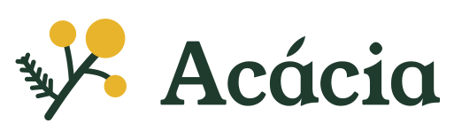
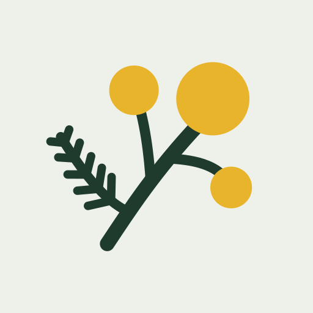
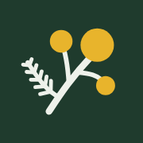

Acácia: logo final (T06)
Direção A · Restinga. Wordmark em Young Serif convertida em contornos, símbolo do ramo com três flores-pompom, paleta exata da direção. Todos os arquivos são gerados por source/build_logo.py.
1. Horizontal
logo-horizontal-light.svg (para fundos claros) e logo-horizontal-dark.svg (para fundos escuros). Fundo transparente.

light · sobre Concha
dark · sobre Restinga2. Acento do "á": folíolo × agudo normal
Teste pedido na T05. No folíolo, o acento vira uma folha do mesmo desenho dos folíolos do ramo. Em tamanho pequeno ele ainda é lido como acento.
Folíolo recomendado · nos arquivos finais
Agudo da fonte
3. Símbolo: duas variações da folha
Ficou uma dúvida real: a folha em "traços de régua" (liga com a régua dos 50 m) ou a folha cheia, em silhueta (mais botânica, mais pesada em tamanho pequeno). As flores e o caule são iguais nas duas.
A1 · Ramo (folha em traços) recomendado · nos arquivos finais

A2 · Pena (folha cheia)
4. Quadrado / avatar (WhatsApp e Instagram)
logo-square-dark.svg e logo-square-light.svg: quadrado cheio, desenho dentro do círculo inscrito. O recorte circular de 40 px abaixo é o tamanho real da lista de conversas.
5. Favicon
favicon.svg é um desenho reduzido do símbolo (caule grosso, uma folha só, flores maiores), porque os traços da folha somem abaixo de 32 px. PNGs: favicon-32.png, apple-touch-icon-180.png e icon-512.png (os dois últimos com fundo cheio, porque o iOS e o Android arredondam os cantos sozinhos).

apple-touch-icon-180.png (50%)6. Cores usadas
| Cor | Hex | No logo |
|---|---|---|
| Restinga | #1F3B2D | Texto e ramo na versão clara; fundo do avatar escuro e do favicon |
| Concha | #EEF1EA | Texto e ramo na versão escura; fundo do avatar claro |
| Acácia | #E8B42C | As três flores, em todas as versões |
Folha e Mar raso ficam fora do logo. Amarelo sobre Concha tem 1,67:1: as flores funcionam como cor, mas no avatar claro em 40 px elas perdem força. Por isso o avatar recomendado é o escuro (6,39:1).